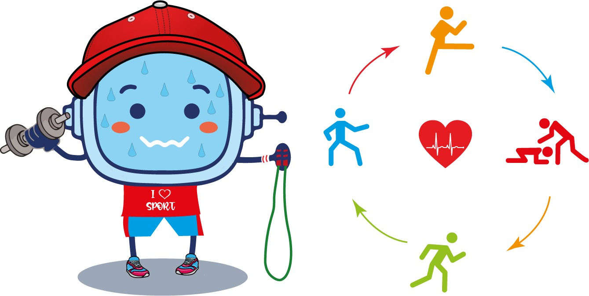
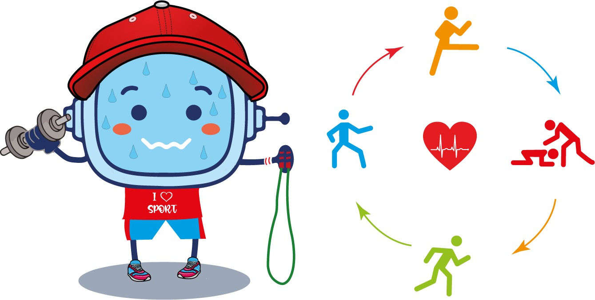

En este nuevo proyecto de aprendizaje crearás un panel/web con circuito de actividades físicas en tu localidad para “poner en forma” a tus familiares, compañeros/as de tu colegio, amigos/as o vecinos/as.
¡Ánimo, será divertido !

En este nuevo proyecto de aprendizaje crearás un panel/web con circuito de actividades físicas en tu localidad para “poner en forma” a tus familiares, compañeros/as de tu colegio, amigos/as o vecinos/as.
¡Ánimo, será divertido !
Sigue las siguientes fases para la realización del panel y la web de los circuitos de actividades deportivas.
Fase 1: Encontrar un lugar idóneo para hacer el circuito
Fase 2: Buscar actividades, ejercicios… para hacer los circuitos
Fase 3: Desarrollo de los circuitos con datos matemáticos
Fase 4: Realización de los paneles y de la web
Fase 5: Difusión de los circuitos elaborados
Fases para la realización del panel y la web :
| Fase 1: Encontrar un lugar para el circuito | |
| Fase 2: Buscar actividades, ejercicios… | |
| Fase 3: Desarrollarlos con datos matemáticos |  |
| Fase 4: Realizar los paneles y la web |  |
| Fase 5: Difundir los circuitos elaborados |
Para realizar nuestros circuitos debéis leer y entender muy bien toda la información que se os da. Hablar con el equipo y organizar todo el trabajo a desarrollar por el grupo, tanto en equipo como individual. Es imprescindible que organicéis el trabajo según la ficha de equipo. También debéis marcar el día de comienzo y las entregas, tanto individual como en grupo.
Organiza el trabajo en la ficha de equipo. Accede a la ficha de equipo.
Fase 1: Plano del circuito deportivo.
En esta primera fase vais a buscar un lugar de vuestro entorno que sea adecuado para hacer el circuito de actividades físicas. Recordad que ya hicisteis una actividad en grupo muy parecida llamada “espacios para el deporte en mi localidad” .
Seguid los siguientes pasos para hacer esta fase.
Entre todos decidimos qué lugar nos gusta más para hacer nuestro circuito.
En la ficha 2, explicamos razonadamente la justificación y los motivos del lugar elegido. Añadiremos el tipo de actividad física que hemos decidido desarrollar y porque ese lugar es adecuado. Accede a la ficha 2.
Es muy importante que sepáis las medidas que tiene el lugar donde vais a realizar el circuito. Medidas totales del circuito y distancia de posta a posta.
Podéis utilizar varias formas para conseguir las medidas: ir al lugar y medir el espacio, usar un plano y dibujarlo a escala, utilizar herramientas de Internet para medir el lugar…
Para completar esta fase debéis:
Rellenad la ficha 3 con las medidas del circuito. Expresar las medidas de forma compleja. Accede a la ficha 3.
A continuación, tendréis que señalar en el plano cada una de las postas.
Por último, indicad el tipo de desplazamiento (andando, corriendo, bici…) que se utilizará para ir de una posta otra.
Para realizar nuestro circuito
Debes:
Toda la información dada
Muy importante:
Organiza el trabajo en la ficha de equipo. Accede a la ficha de equipo.
Fase 1: Plano del circuito deportivo
Vamos a buscar un lugar de tu entorno
Que se adecuado para el circuito
Recuerda: ya has hecho una actividad parecida, llamada
”espacios para el deporte en mi localidad”
Sigue los siguientes pasos
Para llegar a una meta, es conveniente que seas un buen o buena estratega. Es decir, tener métodos, técnicas, “trucos” para llegar antes o de forma más fácil donde tú quieres.
Ahora te voy a enseñar una estrategia, ¡Aprovéchala para alcanzar tu reto!
La estratégia que vamos a aprender en este REA se llama “Recuerdo y Evocación”, te ayudará cuando tengas que realizar actividades similares a las que ya has hecho anteriormente por ejemplo, cuando buscastes fotos sobre las aulas del futuro.
Echa un vistazo a esta estrategia en el siguiente enlace a la Guía de la Competencia de Aprender a Aprender.
¡Ánimo, lo harás genial!
Fase 2 : Búsqueda de circuitos y actividades.
En esta fase tendréis que realizar las siguientes acciones:
En grupo buscad ejemplos de circuitos deportivos y/o multideportivos … analizaremos que tienen cada uno de ellos , que podemos utilizar para nuestros circuitos. Rellenamos la ficha 4. Accede a la ficha 4
De forma individual ,cada cual deberá buscar actividades para los circuitos. Mínimo 5 actividades. Puedes ayudarte del trabajo previo que realizaste cuando fuiste al centro deportivo. “actividades realizadas en el centro”. Rellenar la ficha 5 de manera individual. Accede a la ficha 5.
Fase 2 :
Búsqueda de circuitos y actividades.
En esta fase
Realizarás las siguientes acciones:

Fase 3: Desarrollo de los circuitos con datos matemáticos
Ahora diseñaremos, a partir de los ejercicios que habéis elegido, vuestro circuito. Para ello, es muy importante que cada una de las postas contenga:
Para no olvidar nada, usa la ficha que se os adjunta. Debéis hacer un trabajo limpio y cuidado ya que estas fichas deberán pegarse en el mapa cerca de cada posta.
Accede a la ficha de postas.
Para terminar esta fase, repasamos todo lo realizado en el plano con la lista de cotejo.
Fase 3: Desarrollo de los circuitos con datos matemáticos
Ahora vas a diseñar
Con los ejercicios elegidos
Tu circuito.
Las postas deben contener:
Para que no se te olvide nada
Usa la ficha que se adjunta
Haz un trabajo cuidado
Porque estas fichas las pegarás
En el mapa
Cerca de cada posta
Para terminar
repasa todo lo realizado
en el plano con la lista de cotejo.
Obra publicada con Licencia Creative Commons Reconocimiento No comercial Compartir igual 4.0